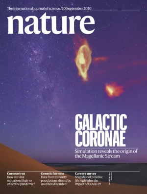
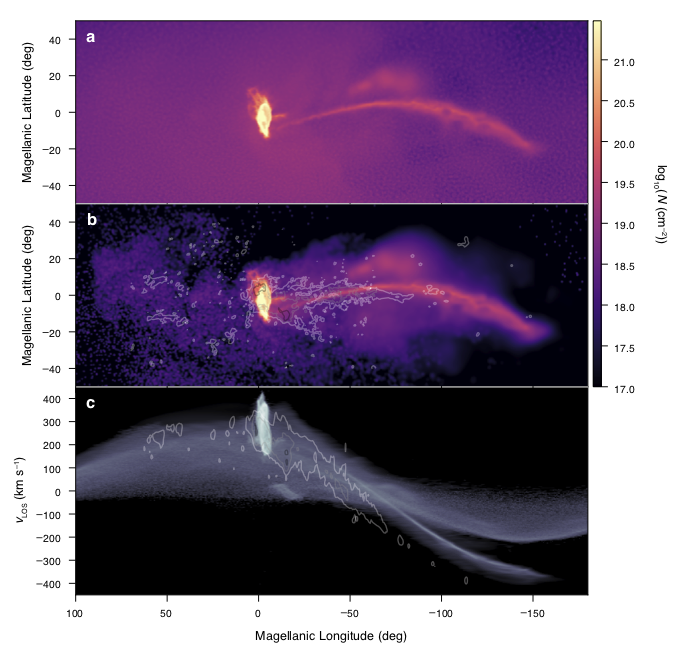
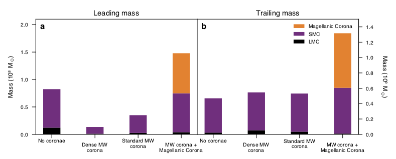
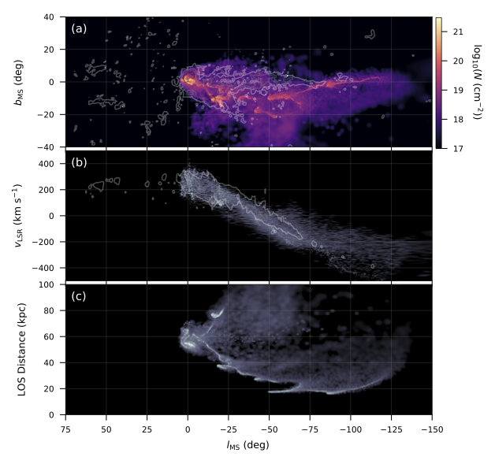

ASTROPHYSICISTPHOTOGRAPHERDANCER
I have worked on various topics in astrophysics throughout my academic career. I am currently a PhD student at UW - Madison in Wisconsin working with Professor Elena D'Onghia on simulations of the formation and evolution of the Magellanic Stream. I am also working with an undergraduate student, Emil Pellett, on developing wavelet transformation and analysis code in Python to map stellar moving groups in the Milky Way using Gaia data. In the past, I have completed projects on characterizing light curves of "ultra-long period" Cepheid variable stars, detecting and analyzing the evolution of canopy regions on the Sun using AIA images from the Solar Dynamics Observatory, and constraining theoretical mechanisms of jet formation in proto-planetary nebulae. I also received a Master's degree in Theoretical Physics from the University of Edinburgh in 2017 where I performed calculations in self-dual Yang-Mills theory to learn more about the connection between quantum field theory and quantum gravity using the double copy.
The bulk of my work over the past few years has been in running N-body hydrodynamical simulations of the formation of the Magellanic Stream. These simulations have shown that a warm circumgalactic medium around the Large and Small Magellanic Clouds (LMC/SMC), the Magellanic Corona, is a key ingredient in being able to account for the total mass of the Stream. Previous works had not been able to explain the massive amount of ionized gas (~2 billion solar masses) which makes up the majority of the Stream's mass budget. Since the Magellanic Corona is expected to be around the virial temperature of the LMC (3×105 K for an LMC halo of 2×1011 solar masses), this gas should be ionized. Therefore, as the Magellanic Clouds fall in towards the Milky Way, the Magellanic Corona is warped and stretched by the Milky Way's gravitational potential as well as its own hot circumgalactic gas. This work was published in September 2020 in Nature:
Lucchini, S., D'Onghia, E., Fox, A. J., et al. 2020, Nature, 585, 203, doi: 10.1038/s41586-020-2663-4
Lucchini, S., D'Onghia, E., Fox, A. J., et al. 2020, Nature, 585, 203, doi: 10.1038/s41586-020-2663-4

The Magellanic Stream in zenithal equal-area coordinates. a, Observed HI data for the Magellanic Stream (McClure-Griffiths et al. 2009), with the line-of-sight velocity indicated by the colour scale (from -350 km s-1 to 400 km s-1) and the relative gas column density indicated by the brightness. The points represent the sightlines with ultraviolet-absorption-line observations from the Hubble Space Telescope (Fox et al. 2014), coloured by their line-of-sight velocity. These points show the extent of the ionized gas associated with the stream. b, The results of the model including the Magellanic Corona and the Milky Way's hot corona. Gas originating in both the LMC and the SMC disks is shown in the model, without separating neutral gas from ionized gas. This affects the morphology of the stream, causing the model to appear smoother and less fragmented than the data. However, the model reproduces the current spatial location and velocity of both clouds, and the velocity gradient of the gas along the stream. The Milky Way disk and background are extracted from real HI images. Image in a adapted with permission from McClure-Griffiths et al. (2009).

Gas column density and velocity in Magellanic coordinates. a, The gas column density N of the simulated stream, which is composed of the Magellanic Corona gas and cold disk gas stripped from the clouds, displayed in Magellanic coordinates. b, Column density of only the simulated cold gas stream, compared to HI data from Nidever et al. (2010). Black, grey and white contours corresponding to observed column densities of 1019 cm-2, 1020 cm-2 and 1021 cm-2, respectively. c, The line-of-sight velocity of the total stream gas as a function of Magellanic longitude, with contours as in b and brightness showing the relative density.

Mass budget for the Magellanic Stream. a, b, Origin of the mass in the leading arm (a) and the stream (b) at the present day. Each column represents a model of the formation of the stream: the fiducial dwarf-dwarf galaxy interaction model (first on the left); a dwarf-dwarf galaxy interaction model that includes a high-density Milky Way gas halo with total mass 5×109 solar masses, which shows that the leading arm does not survive (second left column); a dwarf-dwarf galaxy interaction model that includes a lower-density Milky Way gas halo (total mass of around 2×109 solar masses), still consistent with current estimates (second from the right); and the model reported here of a dwarf-dwarf galaxy interaction that includes the lower-density Milky Way gas halo and the Magellanic Corona (right-most column). The inclusion of the Magellanic Corona shows that this gas contributes greatly to the total mass of the stream, increasing it to values consistent with observations (about 1.3×109 solar masses).
We have also recently submitted work improving upon the orbital history of the Magellanic Clouds. In the simulations above we used the same orbital parameters as previous works, however this was the first time a Magellanic Corona and Milky Way circumgalactic medium were included. The added friction and ram pressure from these new gaseous components increased energy losses between the Clouds as they orbit around each other causing the LMC and SMC to be merged at the present day. Therefore, the inclusion of these two coronal components of the galaxies necessitate an alternate orbital history for the Clouds so that we can match their present day positions and velocities. We found an orbit in which the Clouds interact twice over 3.4 billion years tidally producing a Trailing Stream and gaseous Bridge between them. The most interesting result is that the gaseous Stream ends up as close as 20 kiloparsecs away from the Sun, which is a significant paradigm shift from previous models which predicted distances out to 100-200 kiloparsecs away.

The orbital history of the Magellanic Clouds. The left panel shows the evolution of the Magellanic Stream in cartesian coordinates with the MW disk centered at the origin and denoted by the gray shaded oval (the sun is located at (x,y,z) = (-8.3,0,0.027) kpc). The solid and dashed lines represent the past orbital trajectories of the LMC and SMC respectively. The color of the gas represents plane-projected density on an arbitrary scale with higher densities represented as lighter colors. The top right panel shows the distance between the center of masses of the LMC and SMC in kpc as they orbit around each other and fall in towards the MW. Their initial state is on the left side of the plot at t = -3.4 Gyrs and it progresses towards present day on the right (t = 0). The bottom right panel shows the Galactocentric distance of the Magellanic Clouds in kpc where the solid and dashed lines represent the LMC and SMC respectively.